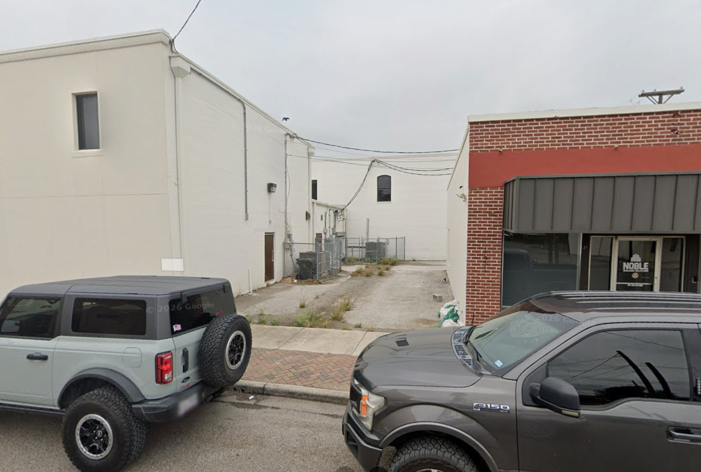
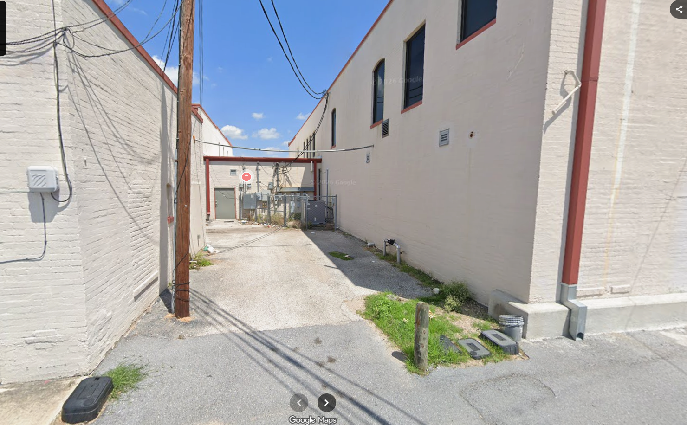
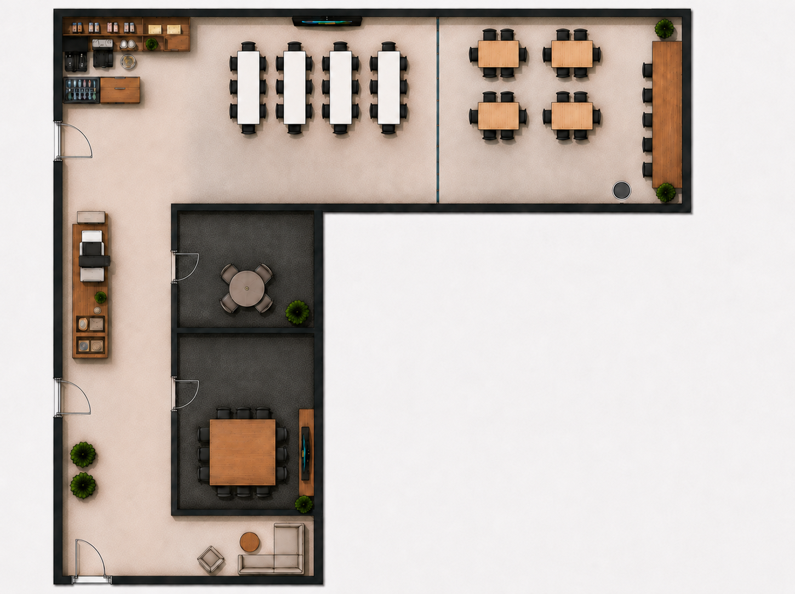
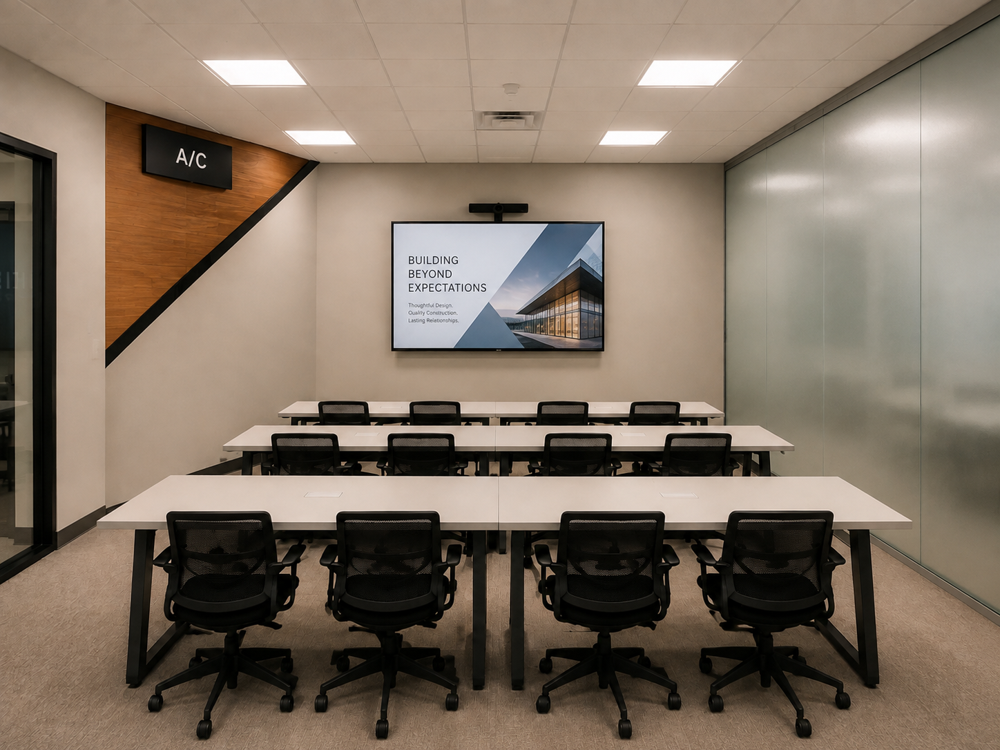
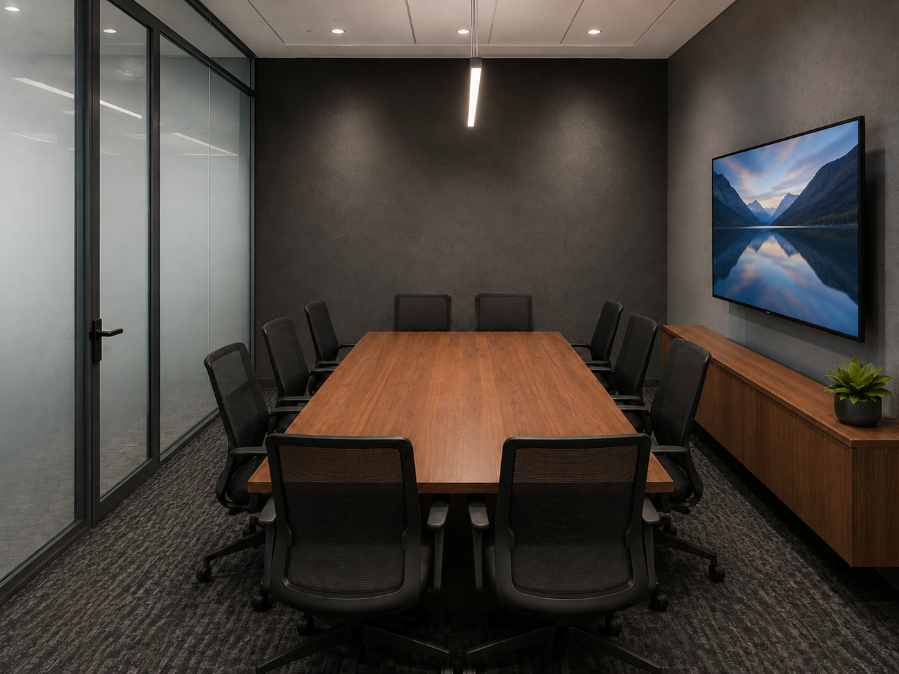
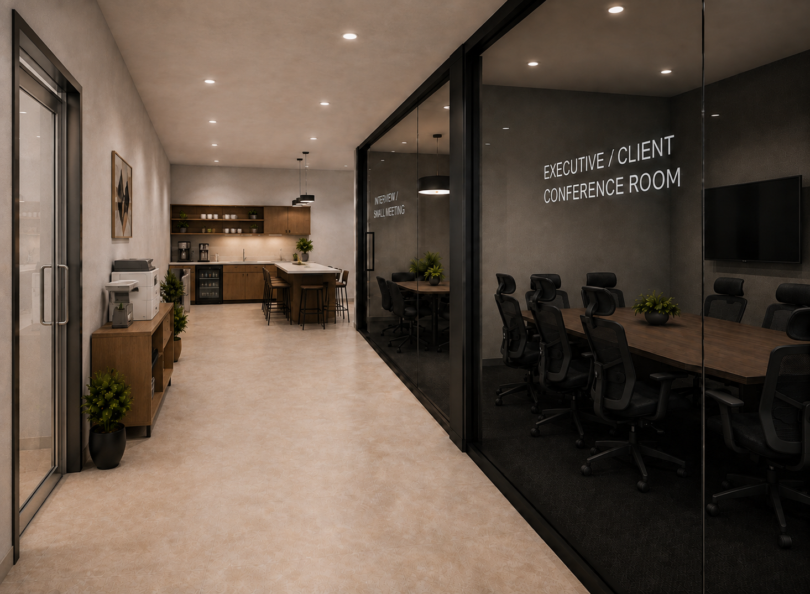
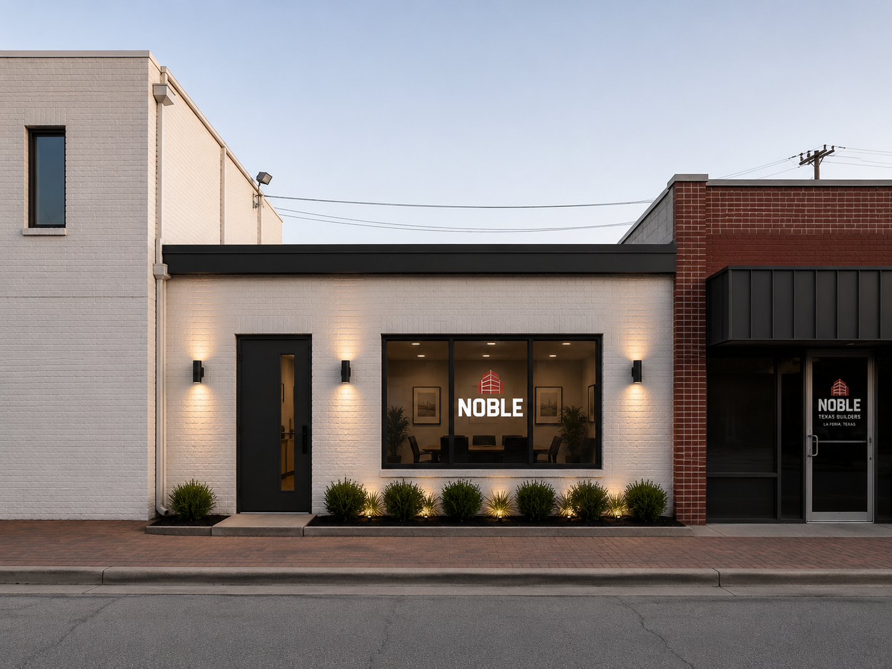

Project Overview
The project explored how an underutilized rear area of Noble's existing office could become a more flexible and productive extension of the facility. The concept combined training, meeting, client, workspace, and support functions while responding to existing access, utilities, HVAC equipment, circulation, and drainage considerations.
My Role
Project Lead / Site Analysis / Concept Development
I coordinated the overall team proposal and directly focused on site investigation, existing conditions, project opportunity, conceptual development, and the integration of the team's estimating, scheduling, constructability, permitting, and presentation work.
Project Leadership Site Analysis Concept Development Construction Planning Executive PresentationExisting Conditions & Project Opportunity
Starting with the site
The design began with field documentation of the rear expansion area and the existing conference-room environment. The team considered existing doors and egress, mechanical equipment, utility access, circulation, and the connection between the proposed addition and the occupied office.
A key opportunity was to create more than a traditional conference room. The proposed facility was developed as a flexible hub that could support internal meetings and training while also providing professional space for clients, consultants, subcontractors, architects, engineers, and other project partners.

Existing rear area considered for the proposed addition.

Existing building connection and circulation constraints.
Key Design Constraints
- Maintain safe access and required egress around the existing occupied facility.
- Coordinate existing electrical and utility systems that must remain functional.
- Relocate two existing A/C units to rooftop supports to recover usable interior area.
- Integrate the addition with the existing building rather than treating the site as an empty parcel.
- Recognize regional extreme-rainfall risk and verify drainage, grades, finished-floor elevation, and roof drainage during final design.
Flood Risk & Constructability Thinking
The conceptual planning included a preliminary review of FEMA flood mapping, NOAA precipitation-frequency data, the March 2025 Rio Grande Valley rainfall event, and observed site conditions. The proposal did not assume that major flood-control construction was automatically required; instead, it identified drainage and elevation items that would need verification during design development.
Items identified for verification
- Existing site grades and drainage direction
- Proposed finished-floor elevation
- Positive drainage away from walls and entrances
- Roof drainage and discharge locations
- Protection/elevation of electrical and mechanical equipment
- Applicable City and FEMA requirements during permitting
Why this mattered
The exercise reinforced that conceptual design decisions cannot be separated from existing field conditions. The layout, roof systems, mechanical relocation, utilities, and site drainage all had to be considered together before the project could move toward final design.
Conceptual Design
The L-shaped layout was organized around flexibility. Instead of dedicating the entire addition to one meeting type, the design created spaces that could support training, presentations, client meetings, interviews, individual work, project coordination, and informal collaboration.

Conceptual floor plan developed around the available rear footprint and existing building connection.

Training / Flexible Room - adaptable furniture and presentation setup.

Executive / Client Conference Room - private project and client coordination space.

Interior circulation illustrating the relationship between collaboration spaces and the existing office.

Exterior concept showing the addition integrated with the existing Noble office.
Construction Planning
Scope Integration
The proposal considered the full construction sequence rather than only architectural space planning. The conceptual scope included site preparation, foundations, structural framing, building envelope, roofing, interior build-out, MEP coordination, finishes, inspections, furnishings, and closeout.
Major Coordination Items
- Rooftop relocation of existing HVAC equipment
- Verification of existing electrical-service capacity
- Project-specific geotechnical verification before foundation construction
- Occupied-building access and sequencing
- Building-envelope and roof-penetration coordination
- MEP rough-in and inspection sequencing before concealment
Conceptual Schedule
The team developed a conceptual sequence from permitting and preconstruction through site work, foundations, structure, enclosure, MEP rough-in, finishes, furniture, and final site work. The planned duration was approximately 186 calendar days.
What I Took From the Project
From idea to buildable concept
The most valuable part of the project was connecting a business need to field conditions and then carrying that idea through site analysis, layout decisions, constructability, schedule, scope, permitting, and presentation.
Leading across disciplines
Leading a three-person team required coordinating separate workstreams while keeping the proposal consistent. It reinforced the importance of clear ownership, communication, and understanding how design, estimating, scheduling, and field execution affect one another.